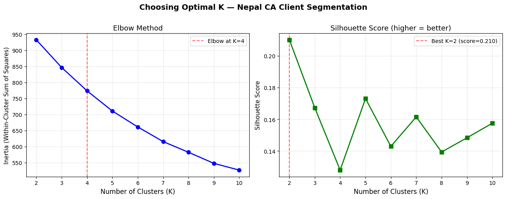
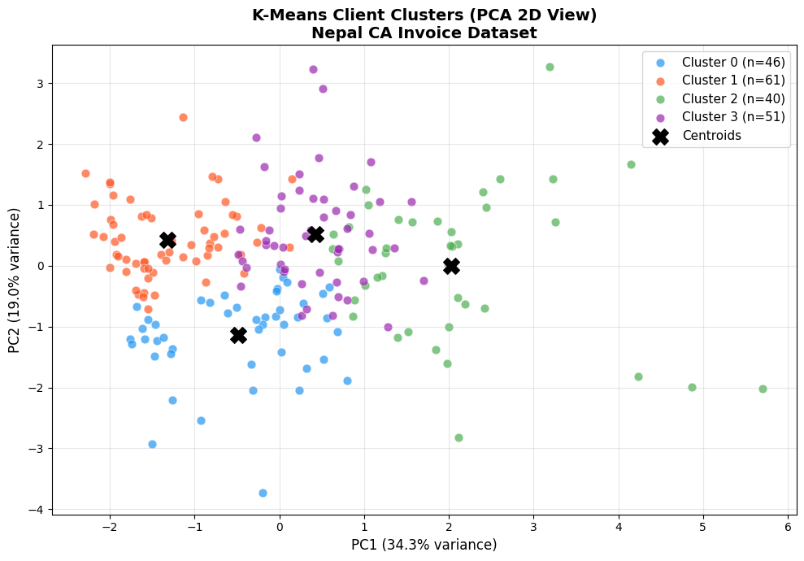
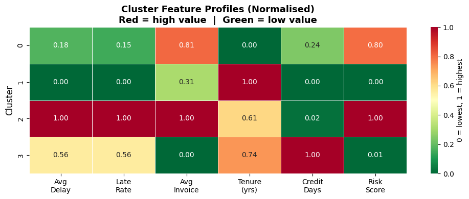
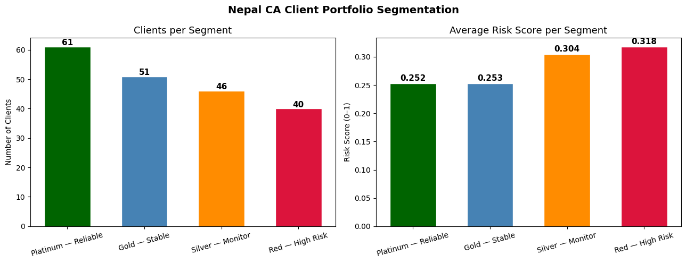
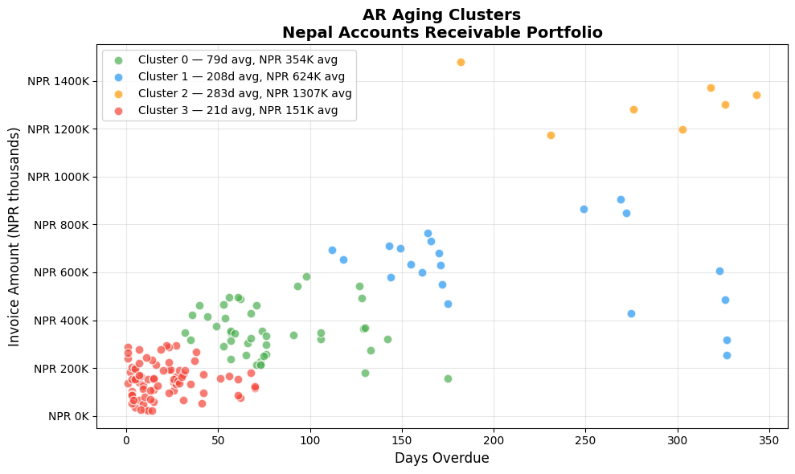

🔍 Clustering & K-Means for CA Professionals
Unsupervised Learning — Segment Clients, Expenses & Risk Without Labels
Pre-requisite: Module 09 — Regression & Classification
Session Duration: 3–5 hours
Approach: Concept → Fundamentals → Hands-on Practice
📋 Table of Contents
| Part | Section | Topic |
|---|---|---|
| Part 1: Why Clustering? | 1 | What is Unsupervised Learning? |
| 2 | Where CAs Use Clustering | |
| Part 2: Fundamentals | 3 | How K-Means Works — Step by Step |
| 4 | Choosing K — The Elbow Method | |
| 5 | Silhouette Score — Validating Clusters | |
| Part 3: Hands-on | 6 | Setup & Data Loading |
| 7 | Feature Selection & Preprocessing | |
| 8 | Finding Optimal K | |
| 9 | Fit K-Means & Label Clients | |
| 10 | Visualise Clusters (PCA) | |
| 11 | Profile Each Cluster | |
| 12 | Collection Strategy by Segment | |
| Part 4: Finance Applications | 13 | AR Aging Segmentation |
| 14 | Export Cluster Labels to Excel | |
| Part 5: Practice | 15 | Exercises & Solutions |
Part 1: Why Clustering?
Section 1: What is Unsupervised Learning?
Supervised vs Unsupervised — the key difference
In Modules 08 and 09, every model was supervised: we trained it on labelled data
(we knew which invoices were late, so the model learned from that history).
Clustering is unsupervised — there are no labels. The algorithm discovers hidden
groupings in your data purely from the patterns in the numbers.
"Think of it as sorting 500 client folders into piles by similarity — without
being told what the piles should be."
What K-Means does
K-Means partitions your data into K groups (clusters) such that:
- Every data point belongs to exactly one cluster
- Points within a cluster are as similar to each other as possible
- Points in different clusters are as different as possible
| Concept | Plain English |
|---|---|
| Cluster | A group of similar clients / transactions / accounts |
| Centroid | The average point at the centre of a cluster |
| K | The number of clusters you want |
| Inertia | Total distance of all points from their cluster centre (lower = tighter) |
Section 2: Where CAs Use Clustering
Clustering is one of the most practically useful tools in a CA's analytics toolkit
because real-world financial data rarely comes with neat categories.
| CA Use Case | What You Cluster | Output |
|---|---|---|
| Debtor segmentation | Client payment history, delays, invoice size | Segment-specific collection strategy |
| Expense categorisation | Vendor transactions with no category tag | Auto-group expenses for audit |
| AR aging analysis | Outstanding invoices by age, amount, client | Risk tiers for provisioning |
| Budget variance | Department spending patterns across months | Identify outlier cost centres |
| Fraud detection | Transaction amounts, times, frequencies | Flag unusual clusters |
| Client profitability | Revenue, effort, payment speed, credit risk | Focus on high-value low-risk clients |
Nepal-specific context
Nepal's VAT filing cycle (monthly/trimestral) creates predictable seasonal payment patterns.
The Dashain/Tihar peak in Q2 (Kartik) strains working capital for trading clients.
Clustering can reveal which client segments are most vulnerable to Teej/Dashain cash crunches
and which are structurally late-payers regardless of season.
Part 2: Fundamentals
Section 3: How K-Means Works — Step by Step
The algorithm (4 steps, repeated)
Step 1 — Initialise: Place K centroids randomly in the data space.
Step 2 — Assign: Each data point joins the cluster of its nearest centroid
(measured by Euclidean distance).
Step 3 — Update: Move each centroid to the mean position of all its assigned points.
Step 4 — Repeat: Go back to Step 2. Keep going until centroids stop moving
(convergence) or a maximum number of iterations is reached.
Important properties
| Property | Implication |
|---|---|
| Scale-sensitive | Features in large units (NPR amounts) dominate — always standardise first |
| K must be chosen | You decide the number of clusters — the elbow method helps |
| Random initialisation | Results can vary slightly — use random_state for reproducibility |
| Assumes spherical clusters | Struggles with elongated or irregular shapes |
Key rule: Always run
StandardScalerbefore K-Means. A client with
NPR 5,000,000 invoice amount will otherwise always be in its own cluster
simply because of the large number, regardless of payment behaviour.
Section 4: Choosing K — The Elbow Method
You can't just pick K=3 arbitrarily (well, you can, but you shouldn't).
The elbow method plots inertia (total cluster tightness) against K and
looks for the point where adding more clusters stops helping significantly.
Inertia
|
|\ ← K=1: one big cluster, very high inertia
| \
| \___ ← elbow around K=3 or 4
| \___________
+--1--2--3--4--5--6-→ K
At the elbow point, inertia drops sharply before that K and slowly after —
that's usually the right number of clusters for your data.
Silhouette Score (Section 5)
A second validation metric: measures how similar each point is to its own cluster
vs other clusters. Ranges from −1 to +1:
| Score | Meaning |
|---|---|
| 0.7 – 1.0 | Strong, well-separated clusters |
| 0.5 – 0.7 | Reasonable structure |
| 0.25 – 0.5 | Weak structure, consider different K |
| < 0.25 | No meaningful clustering |
Section 5: Silhouette Score — Validating Clusters
For each data point i, the silhouette score is:
s(i) = (b - a) / max(a, b)
where:
a = average distance from i to all other points in the SAME cluster
b = average distance from i to all points in the NEAREST OTHER cluster
- High a, low b → point is far from its cluster but close to another → score near −1 (bad)
- Low a, high b → point fits its cluster well → score near +1 (good)
In practice: plot both inertia (elbow) and silhouette score against K,
then pick the K where elbow bends AND silhouette is highest.
Part 3: Hands-on — Segment Nepal CA Clients
Section 6: Setup & Data Loading
We use nepal_invoice_features.csv generated in Module 08.
This dataset has 900 invoices from 200 Nepal companies across 7 provinces and 8 industries.
Our goal: group clients into behavioural segments to guide AR collection strategy.
import pandas as pd
import numpy as np
import matplotlib.pyplot as plt
import matplotlib.ticker as mticker
import seaborn as sns
from sklearn.preprocessing import StandardScaler
from sklearn.cluster import KMeans
from sklearn.decomposition import PCA
from sklearn.metrics import silhouette_score
import warnings
warnings.filterwarnings('ignore')
# Load client-level features from Module 08
df = pd.read_csv('nepal_invoice_features.csv')
print(f'Dataset: {df.shape[0]} invoices, {df.shape[1]} columns')
print(f'Industries: {df["Industry"].nunique()} | Provinces: {df["Province"].nunique()}')
print(f'Unique clients: {df["Client_ID"].nunique()}')
print()
print('Columns available:')
print(list(df.columns))
Dataset: 900 invoices, 40 columns
Industries: 8 | Provinces: 7
Unique clients: 198
Columns available:
['invoice_credit_ratio', 'prev_late_rate', 'amount_vs_industry_median', 'daily_obligation', 'is_high_utilisation', 'is_repeat_offender', 'is_clean_record', 'is_first_time_client', 'is_long_term_client', 'is_high_risk_industry', 'is_mega_invoice', 'is_Q4_due', 'is_dashain_season', 'is_vat_filing_month', 'invoice_quarter', 'due_quarter', 'days_to_fy_end', 'due_on_weekend', 'industry_target_enc', 'tenure_band', 'amount_band_ord', 'utilisation_x_history', 'risk_x_amount', 'q4_x_late_history', 'manual_risk_score', 'client_total_invoices', 'client_avg_invoice', 'client_avg_delay', 'client_late_rate', 'client_late_count', 'Invoice_Amount', 'Tenure_Years', 'Prev_Late_Count', 'Credit_Days', 'Invoice_ID', 'Client_ID', 'Client_Name', 'Industry', 'Province', 'Is_Late']
Section 7: Feature Selection & Preprocessing
For client segmentation we want features that capture payment behaviour and
credit risk profile at the client level. We'll aggregate invoice-level data
to one row per client first.
Selected features:
| Feature | What it measures |
|---|---|
client_avg_delay |
Average days late across all client invoices |
client_late_rate |
Fraction of invoices paid late (0–1) |
client_avg_invoice |
Mean invoice size (NPR) |
Tenure_Years |
How long they've been a client |
Credit_Days |
Credit terms granted |
manual_risk_score |
Composite risk score from Module 08 |
# Aggregate to one row per client (take most recent record per client)
client_df = (
df.groupby('Client_ID')
.agg(
Client_Name = ('Client_Name', 'first'),
Industry = ('Industry', 'first'),
Province = ('Province', 'first'),
avg_delay = ('client_avg_delay', 'mean'),
late_rate = ('client_late_rate', 'mean'),
avg_invoice = ('client_avg_invoice', 'mean'),
tenure_years = ('Tenure_Years', 'mean'),
credit_days = ('Credit_Days', 'mean'),
risk_score = ('manual_risk_score', 'mean'),
total_invoices = ('client_total_invoices', 'mean'),
)
.reset_index()
)
print(f'Client-level dataset: {client_df.shape[0]} clients')
print()
print(client_df[['avg_delay','late_rate','avg_invoice','tenure_years',
'credit_days','risk_score']].describe().round(2))
Client-level dataset: 198 clients
avg_delay late_rate avg_invoice tenure_years credit_days \
count 198.00 198.00 198.00 198.00 198.00
mean 38.73 0.30 803720.64 4.37 40.83
std 25.81 0.25 330248.59 1.32 6.56
min 1.50 0.00 124000.00 0.33 30.00
25% 14.82 0.00 587500.00 3.46 36.11
50% 37.28 0.29 767333.34 4.39 40.00
75% 53.88 0.50 963321.43 5.26 45.00
max 132.00 1.00 2145000.00 7.98 60.00
risk_score
count 198.00
mean 0.28
std 0.06
min 0.13
25% 0.24
50% 0.27
75% 0.31
max 0.54
# Select clustering features and scale
FEATURES = ['avg_delay', 'late_rate', 'avg_invoice', 'tenure_years',
'credit_days', 'risk_score']
X = client_df[FEATURES].copy()
scaler = StandardScaler()
X_scaled = scaler.fit_transform(X)
print('Features after StandardScaler (mean≈0, std≈1):')
print(pd.DataFrame(X_scaled, columns=FEATURES).describe().round(3))
Features after StandardScaler (mean≈0, std≈1):
avg_delay late_rate avg_invoice tenure_years credit_days \
count 198.000 198.000 198.000 198.000 198.000
mean -0.000 -0.000 0.000 -0.000 -0.000
std 1.003 1.003 1.003 1.003 1.003
min -1.446 -1.196 -2.063 -3.071 -1.655
25% -0.929 -1.196 -0.656 -0.697 -0.722
50% -0.056 -0.037 -0.110 0.012 -0.126
75% 0.588 0.803 0.484 0.672 0.638
max 3.623 2.801 4.072 2.734 2.932
risk_score
count 198.000
mean 0.000
std 1.003
min -2.343
25% -0.608
50% -0.075
75% 0.456
max 4.114
Section 8: Finding Optimal K — Elbow + Silhouette
We test K = 2 through 10, record inertia and silhouette score at each K,
then plot both to identify the best number of client segments.
k_range = range(2, 11)
inertias = []
sil_scores = []
for k in k_range:
km = KMeans(n_clusters=k, random_state=42, n_init=10)
labels = km.fit_predict(X_scaled)
inertias.append(km.inertia_)
sil_scores.append(silhouette_score(X_scaled, labels))
fig, (ax1, ax2) = plt.subplots(1, 2, figsize=(13, 5))
fig.suptitle('Choosing Optimal K — Nepal CA Client Segmentation',
fontsize=14, fontweight='bold', y=1.01)
# Elbow plot
ax1.plot(list(k_range), inertias, 'bo-', linewidth=2, markersize=7)
ax1.set_xlabel('Number of Clusters (K)', fontsize=12)
ax1.set_ylabel('Inertia (Within-Cluster Sum of Squares)', fontsize=11)
ax1.set_title('Elbow Method', fontsize=13)
ax1.grid(True, alpha=0.3)
ax1.axvline(x=4, color='red', linestyle='--', alpha=0.6, label='Elbow at K=4')
ax1.legend()
# Silhouette plot
ax2.plot(list(k_range), sil_scores, 'gs-', linewidth=2, markersize=7)
ax2.set_xlabel('Number of Clusters (K)', fontsize=12)
ax2.set_ylabel('Silhouette Score', fontsize=11)
ax2.set_title('Silhouette Score (higher = better)', fontsize=13)
ax2.grid(True, alpha=0.3)
best_k = list(k_range)[sil_scores.index(max(sil_scores))]
ax2.axvline(x=best_k, color='red', linestyle='--', alpha=0.6,
label=f'Best K={best_k} (score={max(sil_scores):.3f})')
ax2.legend()
plt.tight_layout()
plt.savefig('cluster_selection.png', dpi=120, bbox_inches='tight')
plt.show()
print('K | Inertia | Silhouette')
print('-' * 32)
for k, ine, sil in zip(k_range, inertias, sil_scores):
marker = ' <-- best' if k == best_k else ''
print(f'{k:2} | {ine:10.1f} | {sil:.4f}{marker}')

K | Inertia | Silhouette
--------------------------------
2 | 932.7 | 0.2101 <-- best
3 | 846.5 | 0.1672
4 | 773.6 | 0.1279
5 | 710.5 | 0.1730
6 | 660.9 | 0.1429
7 | 615.1 | 0.1615
8 | 581.8 | 0.1393
9 | 547.2 | 0.1483
10 | 526.1 | 0.1575
Section 9: Fit K-Means & Label Clients
Based on the elbow and silhouette plots, we'll use K=4 —
four behavioural segments are interpretable and meaningful for a CA practice.
K_FINAL = 4
km_final = KMeans(n_clusters=K_FINAL, random_state=42, n_init=10)
client_df['Cluster'] = km_final.fit_predict(X_scaled)
# Cluster sizes
sizes = client_df['Cluster'].value_counts().sort_index()
print('Cluster sizes:')
for c, n in sizes.items():
pct = n / len(client_df) * 100
print(f' Cluster {c}: {n:3d} clients ({pct:.1f}%)')
# Cluster centroids (un-scaled for interpretability)
centroids_scaled = km_final.cluster_centers_
centroids_df = pd.DataFrame(
scaler.inverse_transform(centroids_scaled),
columns=FEATURES
).round(2)
centroids_df.index.name = 'Cluster'
print()
print('Cluster Centroids (original scale):')
print(centroids_df.to_string())
Cluster sizes:
Cluster 0: 46 clients (23.2%)
Cluster 1: 61 clients (30.8%)
Cluster 2: 40 clients (20.2%)
Cluster 3: 51 clients (25.8%)
Cluster Centroids (original scale):
avg_delay late_rate avg_invoice tenure_years credit_days risk_score
Cluster
0 26.68 0.17 908140.35 3.18 40.53 0.30
1 16.72 0.09 747302.21 5.10 39.63 0.25
2 73.54 0.65 970720.55 4.36 39.71 0.32
3 48.61 0.40 646038.70 4.60 43.40 0.25
Section 10: Visualise Clusters (PCA)
With 6 features we can't plot clusters directly. PCA (Principal Component Analysis)
compresses the 6D space into 2D for visualisation — it's not a model, just a lens.
# Reduce to 2D for plotting
pca = PCA(n_components=2, random_state=42)
X_2d = pca.fit_transform(X_scaled)
var_explained = pca.explained_variance_ratio_
client_df['PC1'] = X_2d[:, 0]
client_df['PC2'] = X_2d[:, 1]
PALETTE = {0: '#2196F3', 1: '#FF5722', 2: '#4CAF50', 3: '#9C27B0'}
CLUSTER_NAMES = {
0: 'Cluster 0',
1: 'Cluster 1',
2: 'Cluster 2',
3: 'Cluster 3',
}
fig, ax = plt.subplots(figsize=(10, 7))
for c in range(K_FINAL):
mask = client_df['Cluster'] == c
ax.scatter(
client_df.loc[mask, 'PC1'],
client_df.loc[mask, 'PC2'],
c=PALETTE[c], label=f'Cluster {c} (n={mask.sum()})',
alpha=0.7, s=60, edgecolors='white', linewidths=0.5
)
# Plot centroids in PCA space
centroids_2d = pca.transform(centroids_scaled)
ax.scatter(centroids_2d[:, 0], centroids_2d[:, 1],
c='black', marker='X', s=200, zorder=5, label='Centroids')
ax.set_xlabel(f'PC1 ({var_explained[0]*100:.1f}% variance)', fontsize=12)
ax.set_ylabel(f'PC2 ({var_explained[1]*100:.1f}% variance)', fontsize=12)
ax.set_title('K-Means Client Clusters (PCA 2D View)\nNepal CA Invoice Dataset',
fontsize=14, fontweight='bold')
ax.legend(fontsize=11)
ax.grid(True, alpha=0.3)
plt.tight_layout()
plt.savefig('cluster_pca.png', dpi=120, bbox_inches='tight')
plt.show()
print(f'Variance captured by 2 components: {sum(var_explained)*100:.1f}%')

Variance captured by 2 components: 53.4%
Section 11: Profile Each Cluster
Now we interpret what each cluster means by looking at the average feature
values per cluster. This is where the analytics becomes actionable insight.
# Cluster mean profile
profile = (
client_df.groupby('Cluster')[FEATURES + ['total_invoices']]
.mean()
.round(2)
)
profile.columns = ['Avg Delay (days)', 'Late Rate', 'Avg Invoice (NPR)',
'Tenure (yrs)', 'Credit Days', 'Risk Score', 'Total Invoices']
print('=== Cluster Profiles ===')
print(profile.to_string())
print()
# Industry distribution per cluster
print('=== Top Industry per Cluster ===')
for c in range(K_FINAL):
top_ind = client_df[client_df['Cluster'] == c]['Industry'].value_counts().head(3)
ind_str = ', '.join([f'{i} ({n})' for i, n in top_ind.items()])
print(f' Cluster {c}: {ind_str}')
=== Cluster Profiles ===
Avg Delay (days) Late Rate Avg Invoice (NPR) Tenure (yrs) Credit Days Risk Score Total Invoices
Cluster
0 26.68 0.17 908140.35 3.18 40.53 0.30 4.70
1 16.72 0.09 747302.21 5.10 39.63 0.25 4.39
2 73.54 0.65 970720.55 4.36 39.71 0.32 4.20
3 48.61 0.40 646038.70 4.60 43.40 0.25 4.86
=== Top Industry per Cluster ===
Cluster 0: Trading & Import (11), Construction (8), Manufacturing (7)
Cluster 1: Manufacturing (13), Trading & Import (10), Tourism & Hotels (9)
Cluster 2: Trading & Import (18), Tourism & Hotels (4), Manufacturing (4)
Cluster 3: Trading & Import (11), Banking & Finance (9), Services & IT (8)
# Normalised feature heatmap — shows which features define each cluster
profile_norm = (
client_df.groupby('Cluster')[FEATURES]
.mean()
)
# Normalise each feature 0-1 so heatmap is comparable
profile_norm = (profile_norm - profile_norm.min()) / (profile_norm.max() - profile_norm.min())
profile_norm.columns = ['Avg\nDelay', 'Late\nRate', 'Avg\nInvoice',
'Tenure\n(yrs)', 'Credit\nDays', 'Risk\nScore']
fig, ax = plt.subplots(figsize=(10, 4))
sns.heatmap(
profile_norm, annot=True, fmt='.2f', cmap='RdYlGn_r',
linewidths=0.5, ax=ax, vmin=0, vmax=1,
cbar_kws={'label': '0 = lowest, 1 = highest'}
)
ax.set_title('Cluster Feature Profiles (Normalised)\n'
'Red = high value | Green = low value',
fontsize=13, fontweight='bold')
ax.set_ylabel('Cluster', fontsize=12)
ax.set_xlabel('')
plt.tight_layout()
plt.savefig('cluster_heatmap.png', dpi=120, bbox_inches='tight')
plt.show()

# Assign meaningful names based on profile
# (Run the profile cell above first — names may vary with your data)
profile_raw = (
client_df.groupby('Cluster')[['avg_delay','late_rate','avg_invoice','risk_score']]
.mean()
)
# Sort clusters by risk score to assign labels robustly
risk_order = profile_raw['risk_score'].rank().astype(int)
LABEL_MAP = {}
for c in range(K_FINAL):
rank = risk_order[c]
delay = profile_raw.loc[c, 'avg_delay']
late = profile_raw.loc[c, 'late_rate']
score = profile_raw.loc[c, 'risk_score']
size = profile_raw.loc[c, 'avg_invoice']
if rank == 1:
label = 'Platinum — Reliable'
elif rank == 2:
label = 'Gold — Stable'
elif rank == 3:
label = 'Silver — Monitor'
else:
label = 'Red — High Risk'
LABEL_MAP[c] = label
print(f'Cluster {c} → {label:25s} '
f'delay={delay:.1f}d, late={late:.0%}, risk={score:.3f}')
client_df['Segment'] = client_df['Cluster'].map(LABEL_MAP)
print()
print('Segment counts:')
print(client_df['Segment'].value_counts().to_string())
Cluster 0 → Silver — Monitor delay=26.7d, late=17%, risk=0.304
Cluster 1 → Platinum — Reliable delay=16.7d, late=9%, risk=0.252
Cluster 2 → Red — High Risk delay=73.5d, late=65%, risk=0.318
Cluster 3 → Gold — Stable delay=48.6d, late=40%, risk=0.253
Segment counts:
Segment
Platinum — Reliable 61
Gold — Stable 51
Silver — Monitor 46
Red — High Risk 40
Section 12: Collection Strategy by Segment
The real value of segmentation is acting differently on each group.
Here we generate a tailored AR collection strategy for each cluster.
STRATEGY = {
'Platinum — Reliable': ('Auto-process, annual review', 'darkgreen'),
'Gold — Stable': ('Quarterly check-in, soft nudge', 'steelblue'),
'Silver — Monitor': ('Monthly follow-up, tighten terms','darkorange'),
'Red — High Risk': ('Weekly chase, require advance', 'crimson'),
}
print('=== AR Collection Strategy by Segment ===')
print(f'{"Segment":<28} {"Clients":>7} {"Action"}')
print('-' * 70)
for seg, (action, _) in STRATEGY.items():
n = (client_df['Segment'] == seg).sum()
print(f'{seg:<28} {n:>7} {action}')
# Visualise segment distribution
seg_counts = client_df['Segment'].value_counts()
colors = [STRATEGY[s][1] for s in seg_counts.index]
fig, (ax1, ax2) = plt.subplots(1, 2, figsize=(13, 5))
fig.suptitle('Nepal CA Client Portfolio Segmentation',
fontsize=14, fontweight='bold')
# Bar chart — client count
bars = ax1.bar(seg_counts.index, seg_counts.values, color=colors, edgecolor='white', width=0.6)
ax1.set_title('Clients per Segment', fontsize=13)
ax1.set_ylabel('Number of Clients')
ax1.set_xlabel('')
ax1.tick_params(axis='x', rotation=15)
for bar, v in zip(bars, seg_counts.values):
ax1.text(bar.get_x() + bar.get_width()/2, v + 0.5, str(v),
ha='center', fontsize=11, fontweight='bold')
# Average risk score per segment
seg_risk = client_df.groupby('Segment')['risk_score'].mean().reindex(seg_counts.index)
bars2 = ax2.bar(seg_risk.index, seg_risk.values, color=colors, edgecolor='white', width=0.6)
ax2.set_title('Average Risk Score per Segment', fontsize=13)
ax2.set_ylabel('Risk Score (0–1)')
ax2.set_xlabel('')
ax2.tick_params(axis='x', rotation=15)
for bar, v in zip(bars2, seg_risk.values):
ax2.text(bar.get_x() + bar.get_width()/2, v + 0.005,
f'{v:.3f}', ha='center', fontsize=11, fontweight='bold')
plt.tight_layout()
plt.savefig('segment_strategy.png', dpi=120, bbox_inches='tight')
plt.show()
=== AR Collection Strategy by Segment ===
Segment Clients Action
----------------------------------------------------------------------
Platinum — Reliable 61 Auto-process, annual review
Gold — Stable 51 Quarterly check-in, soft nudge
Silver — Monitor 46 Monthly follow-up, tighten terms
Red — High Risk 40 Weekly chase, require advance

Part 4: Finance Applications
Section 13: AR Aging Segmentation
A classic CA task: group outstanding invoices by how long they've been overdue.
Traditional aging buckets (0–30, 31–60, 61–90, 90+) are fixed by convention.
K-Means can discover natural aging groups from your data — they may not align
with convention but can reveal real payment behaviour patterns.
Here we simulate an AR aging analysis on outstanding invoices.
np.random.seed(42)
n_outstanding = 150
# Simulate outstanding invoices with realistic Nepal B2B payment patterns
ar_df = pd.DataFrame({
'Invoice_ID': [f'AR-{i:04d}' for i in range(1, n_outstanding+1)],
'Client': np.random.choice(
['Himalayan Trading', 'Everest Pharma', 'Kathmandu Builders',
'Pokhara Retail', 'NMB Leasing', 'Ncell Resellers',
'Birgunj Imports', 'Janakpur Mills'],
n_outstanding
),
'Days_Overdue': np.concatenate([
np.random.randint(1, 30, 60), # current — 40%
np.random.randint(30, 75, 45), # 30-75 days — 30%
np.random.randint(75, 180, 30), # 75-180 days — 20%
np.random.randint(180, 365, 15), # >180 days — 10%
]),
'Amount_NPR': np.concatenate([
np.random.randint(20000, 300000, 60),
np.random.randint(50000, 500000, 45),
np.random.randint(100000, 800000, 30),
np.random.randint(200000, 1500000, 15),
]),
})
# Cluster on Days_Overdue and Amount
X_ar = StandardScaler().fit_transform(ar_df[['Days_Overdue', 'Amount_NPR']])
km_ar = KMeans(n_clusters=4, random_state=42, n_init=10)
ar_df['AR_Cluster'] = km_ar.fit_predict(X_ar)
# Profile AR clusters
ar_profile = ar_df.groupby('AR_Cluster').agg(
Count=('Invoice_ID', 'count'),
Avg_Days=('Days_Overdue', 'mean'),
Total_NPR=('Amount_NPR', 'sum'),
Avg_NPR=('Amount_NPR', 'mean'),
).round(0)
ar_profile['Total_NPR_M'] = (ar_profile['Total_NPR'] / 1_000_000).round(2)
print('=== AR Aging Clusters ===')
print(ar_profile[['Count','Avg_Days','Avg_NPR','Total_NPR_M']]
.rename(columns={'Avg_NPR':'Avg Amount','Total_NPR_M':'Total (NPR M)'})
.to_string())
# Scatter plot
ar_colors = {0:'#4CAF50', 1:'#2196F3', 2:'#FF9800', 3:'#F44336'}
fig, ax = plt.subplots(figsize=(10, 6))
for c in range(4):
mask = ar_df['AR_Cluster'] == c
m = ar_profile.loc[c]
ax.scatter(
ar_df.loc[mask, 'Days_Overdue'],
ar_df.loc[mask, 'Amount_NPR'] / 1000,
c=ar_colors[c], s=60, alpha=0.7, edgecolors='white',
label=f'Cluster {c} — {int(m["Avg_Days"])}d avg, '
f'NPR {m["Avg_NPR"]/1000:.0f}K avg'
)
ax.set_xlabel('Days Overdue', fontsize=12)
ax.set_ylabel('Invoice Amount (NPR thousands)', fontsize=12)
ax.set_title('AR Aging Clusters\nNepal Accounts Receivable Portfolio',
fontsize=14, fontweight='bold')
ax.yaxis.set_major_formatter(mticker.FuncFormatter(lambda x, _: f'NPR {x:.0f}K'))
ax.legend(fontsize=10)
ax.grid(True, alpha=0.3)
plt.tight_layout()
plt.savefig('ar_aging_clusters.png', dpi=120, bbox_inches='tight')
plt.show()
=== AR Aging Clusters ===
Count Avg_Days Avg Amount Total (NPR M)
AR_Cluster
0 44 79.0 353960.0 15.57
1 21 208.0 624345.0 13.11
2 7 283.0 1306621.0 9.15
3 78 21.0 150862.0 11.77

Section 14: Export Cluster Labels to Excel
Export the segmented client list to Excel — ready to hand to the collection team
or load into Tally/accounting software for priority follow-up.
export_df = (
client_df[['Client_ID', 'Client_Name', 'Industry', 'Province',
'Cluster', 'Segment', 'avg_delay', 'late_rate',
'avg_invoice', 'tenure_years', 'credit_days', 'risk_score']]
.rename(columns={
'avg_delay': 'Avg_Delay_Days',
'late_rate': 'Late_Payment_Rate',
'avg_invoice': 'Avg_Invoice_NPR',
'tenure_years': 'Tenure_Years',
'credit_days': 'Credit_Days',
'risk_score': 'Risk_Score',
})
.sort_values(['Cluster', 'Risk_Score'], ascending=[True, False])
)
output_file = 'nepal_client_segments.xlsx'
with pd.ExcelWriter(output_file, engine='openpyxl') as writer:
export_df.to_excel(writer, sheet_name='Client Segments', index=False)
client_df.groupby('Segment')[FEATURES].mean().round(2)\
.to_excel(writer, sheet_name='Segment Profiles')
ar_df.to_excel(writer, sheet_name='AR Aging Clusters', index=False)
print(f'Exported to {output_file}')
print(f' Sheet 1: Client Segments — {len(export_df)} rows')
print(f' Sheet 2: Segment Profiles — cluster feature means')
print(f' Sheet 3: AR Aging Clusters — {len(ar_df)} outstanding invoices')
print()
print('Preview — first 5 rows of export:')
print(export_df.head().to_string(index=False))
Exported to nepal_client_segments.xlsx
Sheet 1: Client Segments — 198 rows
Sheet 2: Segment Profiles — cluster feature means
Sheet 3: AR Aging Clusters — 150 outstanding invoices
Preview — first 5 rows of export:
Client_ID Client_Name Industry Province Cluster Segment Avg_Delay_Days Late_Payment_Rate Avg_Invoice_NPR Tenure_Years Credit_Days Risk_Score
NP0040 Everest Imports Pvt. Ltd. Trading & Import Gandaki 0 Silver — Monitor 16.00 0.00 917000.00 1.850000 60.0 0.452300
NP0005 Pokhara Construction Co. Construction Madhesh 0 Silver — Monitor 8.20 0.00 1034000.00 2.806000 39.0 0.420500
NP0184 Himalayan Traders Pvt. Ltd. Trading & Import Gandaki 0 Silver — Monitor 46.67 0.33 500333.33 3.376667 35.0 0.409200
NP0115 Sagarmatha Trekking Co. Tourism & Hotels Sudurpashchim 0 Silver — Monitor 21.20 0.20 474400.00 2.730000 36.0 0.399340
NP0047 Nepal Trade House Trading & Import Gandaki 0 Silver — Monitor 39.83 0.33 782166.67 2.950000 50.0 0.391067
Part 5: Practice Exercises
Section 15: Exercises
Exercise 1 — Change K and Compare
Re-run K-Means with K=3 and K=5. How do the segment profiles change?
Which K gives more actionable segments for a CA practice?
Exercise 2 — Province-wise Segmentation
Filter clients to Bagmati Province only and re-run the full segmentation.
Do the clusters look different from the national picture? Why might that be?
Exercise 3 — Add a Feature
Add total_invoices (number of invoices per client) as a 7th clustering feature.
Re-run elbow + silhouette. Does the optimal K change?
Exercise 4 — Expense Clustering
Using the data below, cluster 12 months of company expenses into natural groups.
Identify which months form the "high spend" cluster.
expense_data = pd.DataFrame({
'Month': ['Shrawan','Bhadra','Ashwin','Kartik','Mangsir','Poush',
'Magh','Falgun','Chaitra','Baishakh','Jestha','Ashadh'],
'Salary': [1200000,1200000,1200000,1300000,1200000,1250000,
1200000,1200000,1300000,1200000,1200000,1350000],
'Rent': [85000]*12,
'Travel': [45000,38000,62000,120000,35000,28000,
32000,55000,78000,95000,42000,115000],
'Marketing':[30000,35000,25000,180000,20000,15000,
18000,22000,45000,90000,38000,75000],
})
💡 Solutions
# Exercise 1 — K=3 vs K=5
for k in [3, 5]:
km_test = KMeans(n_clusters=k, random_state=42, n_init=10)
labels = km_test.fit_predict(X_scaled)
sil = silhouette_score(X_scaled, labels)
print(f'K={k}: silhouette={sil:.4f}')
sizes = pd.Series(labels).value_counts().sort_index().values
print(f' Cluster sizes: {sizes}')
K=3: silhouette=0.1672
Cluster sizes: [42 92 64]
K=5: silhouette=0.1730
Cluster sizes: [52 34 73 3 36]
# Exercise 2 — Bagmati Province only
bagmati = client_df[client_df['Province'] == 'Bagmati'].copy()
X_bag = StandardScaler().fit_transform(bagmati[FEATURES])
sil_bag = []
for k in range(2, 6):
km_b = KMeans(n_clusters=k, random_state=42, n_init=10)
sil_bag.append(silhouette_score(X_bag, km_b.fit_predict(X_bag)))
best_k_bag = range(2, 6)[sil_bag.index(max(sil_bag))]
print(f'Bagmati Province: {len(bagmati)} clients')
print(f'Best K for Bagmati: {best_k_bag} (silhouette={max(sil_bag):.4f})')
km_b = KMeans(n_clusters=best_k_bag, random_state=42, n_init=10)
bagmati['Cluster'] = km_b.fit_predict(X_bag)
print(bagmati.groupby('Cluster')[['avg_delay','late_rate','risk_score']].mean().round(3))
Bagmati Province: 63 clients
Best K for Bagmati: 2 (silhouette=0.2060)
avg_delay late_rate risk_score
Cluster
0 68.503 0.60 0.297
1 27.263 0.19 0.258
# Exercise 3 — Add total_invoices as 7th feature
FEATURES7 = FEATURES + ['total_invoices']
X7 = StandardScaler().fit_transform(client_df[FEATURES7])
k_range = range(2, 8)
sil7 = [silhouette_score(X7, KMeans(n_clusters=k, random_state=42, n_init=10).fit_predict(X7))
for k in k_range]
best_k7 = list(k_range)[sil7.index(max(sil7))]
print(f'With 7 features — Best K: {best_k7} (silhouette={max(sil7):.4f})')
print('Silhouette by K:', {k: round(s, 4) for k, s in zip(k_range, sil7)})
With 7 features — Best K: 2 (silhouette=0.1846)
Silhouette by K: {2: 0.1846, 3: 0.1549, 4: 0.1274, 5: 0.1491, 6: 0.1424, 7: 0.1553}
# Exercise 4 — Expense clustering
expense_data = pd.DataFrame({
'Month': ['Shrawan','Bhadra','Ashwin','Kartik','Mangsir','Poush',
'Magh','Falgun','Chaitra','Baishakh','Jestha','Ashadh'],
'Salary': [1200000,1200000,1200000,1300000,1200000,1250000,
1200000,1200000,1300000,1200000,1200000,1350000],
'Rent': [85000]*12,
'Travel': [45000,38000,62000,120000,35000,28000,
32000,55000,78000,95000,42000,115000],
'Marketing':[30000,35000,25000,180000,20000,15000,
18000,22000,45000,90000,38000,75000],
})
X_exp = StandardScaler().fit_transform(expense_data[['Salary','Rent','Travel','Marketing']])
km_exp = KMeans(n_clusters=3, random_state=42, n_init=10)
expense_data['Cluster'] = km_exp.fit_predict(X_exp)
print('Expense Clusters:')
print(expense_data.groupby('Cluster')['Month'].apply(list).to_string())
print()
print(expense_data.groupby('Cluster')[['Salary','Travel','Marketing']].mean()
.round(0).to_string())
Expense Clusters:
Cluster
0 [Kartik, Baishakh]
1 [Shrawan, Bhadra, Ashwin, Mangsir, Poush, Magh...
2 [Chaitra, Ashadh]
Salary Travel Marketing
Cluster
0 1250000.0 107500.0 135000.0
1 1206250.0 42125.0 25375.0
2 1325000.0 96500.0 60000.0